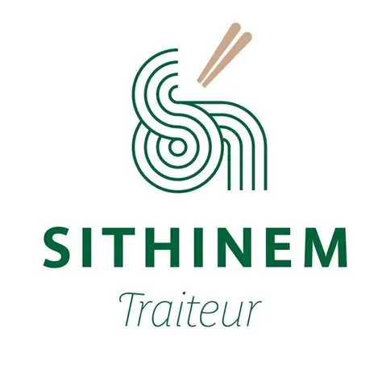

Votre restaurant,
à portée de main.
Connectez ce poste au site pour gérer les commandes, les paiements sur place et les tickets.
État du poste
Chargement…
Fermer la fenêtre conserve l’impression en arrière-plan. Pour l’arrêter, utilisez « Quitter » dans l’icône Sithinem près de l’horloge.